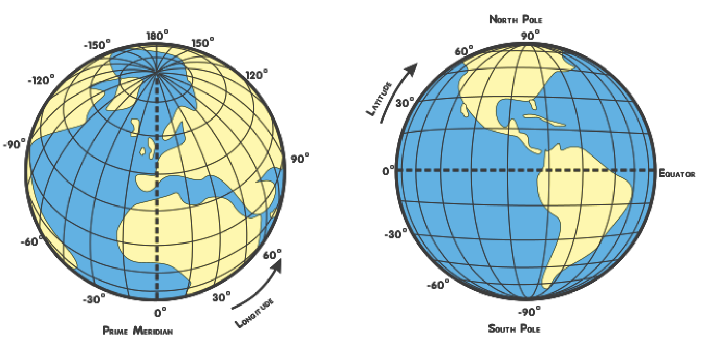
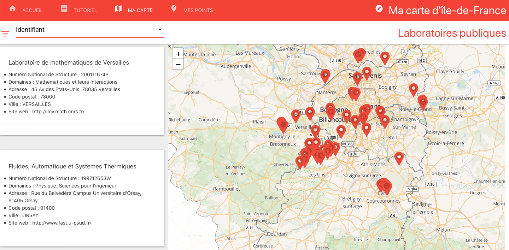

Ma Carte d'île de France est un outil en ligne vous permettant d'enregistrer vos points d'intérêt dans la région et les informations associées à ces points. Une fois la carte créée, un système de filtres vous permet de visualiser aisément vos adresses.
Trouvez un tutoriel détaillé étape par étape, accessible aux plus jeunes comme aux anciens, pour créer votre carte personnalisée d'île de France.
Envoyez-nous vos fichiers de carte avec votre prénom par email afin de voir votre carte apparaître sur le site. Ainsi, enrichissons ensemble les bonnes adresses de la région d'île de France !
Pour positionner des points sur une carte, on utilise des coordonnées géographique qui sont la longitude et la latitude
La longitude nous indique si un point est à l'OUEST ou à l'EST du globe par rapport au méridien de Greenwich. Ce repère, situé en Angleterre, définit la longitude 0°. Les points à l'EST ont une longitude entre 0° et 180° tandis qu'à l'OUEST, la longitude est négative jusqu'à -180°.
La latitude nous indique si un point est au NORD ou au SUD par rapport à l'équateur. L'équateur définit la latitude 0°. La latitude est entre 0° et 180° pour le NORD et descends jusqu'à -180° pour le SUD.
Lisbonne se trouve à l'OUEST du méridien de Greenwich. Sa longitude est alors inférieure à 0°. En effet, la longitude de Lisbonne est -9,13°. Lisbonne est bien au NORD de l'équateur. Sa latitude est alors supérieure à 0°. En effet, la longitude de Lisbonne est 38.70°.
Lorsque vous cliquez sur l'onglet MA CARTE, un ensemble de points s'affiche. C'est la carte des Laboratoires d'île de France. Cette carte est un exemple.
Pour commencer votre carte, allez dans l'onglet MES POINTS et cliquez sur la poubelle delete pour supprimer les points existants et commencer votre carte!
Trois élements sont essentiels pour ajouter des points sur votre carte: un nom unique (identifiant), une longitude et une latitude. Cependant vous avez la possibilité d'ajouter des informations suppémentaires à l'aide du bouton playlist_add.
De nombreux sites donnent les coordonnées géographiques grâce à l'adresse. Vous pouvez utiliser par exemple :
Une fois que vous avez rentré un certain nombre de points, vous pouvez visualiser votre carte en cliquant directement sur l'onglet MA CARTE.
Vous pouvez filter les resultats en fonction des colonnes que vous avez enregistré!
Attention, nous ne stockons aucune donnée que vous enregistrez. Pour garder vos données, il faut enregistrer vos points en cliquant sur save. Un fichier carte.csv est alors généré.
Pour charger vos anciens points, utilisez le bouton file_download et selectionnez votre fichier carte.csv.
Si vous souhaitez que votre carte soit disponible sur ce site web, veuillez l'envoyer à l'adresse : ma-carte-d-ile-de-france@outlook.com.